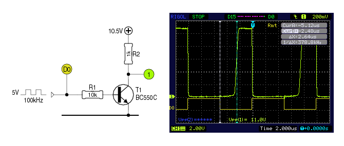
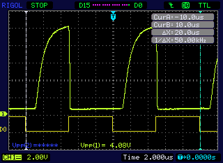
Dat je met een transistor belastingen in- en uit kan schakelen,
is niets nieuws. En meestal werkt dat zoals verwacht.
Echter, zodra de schakelfrequentie wat hoog wordt, loopt het
fout. Dat is goed te zien op het plaatje links: de groene
lijn toont dat T1 goed inschakelt, maar dat er ruim 2.5μs
verloopt alvorens het knooppunt T1/R2 terug hoog is nadat de
ingangsspanning laag werd.
We proberen het dan maar met een darlington, een BC517, in
dezelfde opstelling. Maar, zoals je rechts kan zien, het wordt
er niet beter op...
De spanning begint sneller te stijgen nadat de basis laag
gemaakt wordt, maar de rest van het spanningsverloop is veel trager.
Daar komt bij, dat de collector/emitter-spanning bij een
darlington nooit lager dan 0.6V kan worden, hetgeen duidelijk te
zien is op het scoop-plaatje.
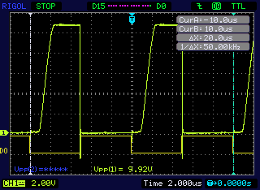 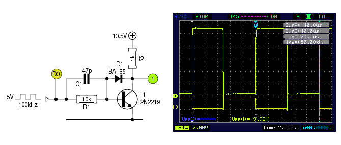 Misschien moeten we maar eens een echte schakeltor nemen, een 2N2219 bijvoorbeeld. Links zien we, wat deze doet bij een testopstelling als hierboven. Dat is al een stuk beter, maar het is nog verre van ideaal.
Dit gedrag wordt veroorzaakt door het feit dat T1 in
verzadiging gestuurd wordt, en enige tijd nodig heeft om
uit die toestand te ontwaken.
Daar valt wel een mouw aan te passen, ondermeer door een kleine
condensator over R1 te plaatsen. Die zorgt er voor dat de basis
bij het uitschakelen kortstondig negatief wordt.
Ook kan tussen basis en collector een Schottky-diode
geplaatst worden, met de anode aan de basis.
Rechts zien we, dat de grafiek nu geen flauwe flanken meer
vertoont. Het wordt alsmaar beter...
Die laatste maatregel is echter niet aan te bevelen bij
toepassingen waar grote stromen moeten geschakeld worden - de
diode zorgt er voor dat de transistor niet in verzadiging
gestuurd wordt, waardoor hij sneller uitschakelt. Maar nu gaat
de transistor niet meer optimaal geleiden, hetgeen
extra-warmteontwikkeling tot gevolg heeft.
Rechts is goed te zien, dat de onderkant van de groene blokgolf
niet lager wordt dan ongeveer +0.5V - hetzelfde verschijnsel dat
zich ook bij de darlington hierboven voordoet.
Dit is dus toch niet zo goed als verwacht...
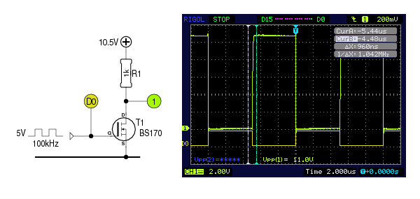 Als we nou een kleine FET nemen, wordt het plaatje nóg mooier, en dat zonder al die condensators en dioden om het schakelgedrag te verbeteren. Op punt '1' is nog enige vertraging te merken, maar die bedraagt slechts enkele ns. Daarnaast schakelt de FET helemaal door. We zijn er bijna...
Willen we grote stromen schakelen, dan lukt dat niet meer met
een BS170. We hebben een zwaardere FET nodig.
Nu bestaan er wel type's, die genoegen nemen met 5V aan hun
ingang, de zogenaamde logic-level FET's. Die kunnen zonder
meer de BS170 vervangen. Maar wie op zoek gaat naar een type met
een erg lage RDS(on) komt al snel tot de vaststelling dat
die een hogere spanning op hun gate nodig hebben.
Wil je zo'n FET met 5V sturen, dan heb je een driver nodig die 5V vertaalt naar een hogere stuurspanning voor de gate.
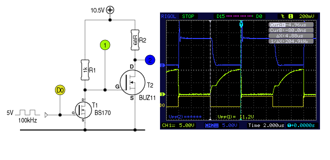 Vermits de BS170 zo goed schakelt, kunnen we overwegen om daarmee een zwaardere FET aan te sturen. Uit het plaatje hiernaast blijkt, dat dit geen goed idee is. De spanning op de drain van T1, die er hierboven nog zo mooi uitzag, lijkt nergens meer op.
Het is de parasitaire gate/source-capaciteit van T2, die voor dit
ongewenst gedrag zorgt. T1 slaagt er wel in deze capaciteit
snel te ontladen, maar het is R1 die voor het opladen instaat.
En de stroom door R1 is nu eenmaal beperkt.
Er kan uiteraard gekozen worden voor een kleinere weerstand,
maar ook een exemplaar van 100Ω heeft een bepaalde tijd
nodig om de gate-capaciteit op te laden.
Doordat de gate van T2 niet goed gestuurd wordt, is ook zijn
schakelgedrag niet optimaal. Daardoor komt hij telkens voor
korte tijd in zijn lineair gebied terecht, hetgeen voor
ongewenste warmteontwikkeling zorgt. Merk op, dat T2 in dit
voorbeeld maar 150mA schakelt. Bij een belasting van 15A zal de
spanning op de drain (blauwe grafiek) er nog veel ongunstiger
uitzien.
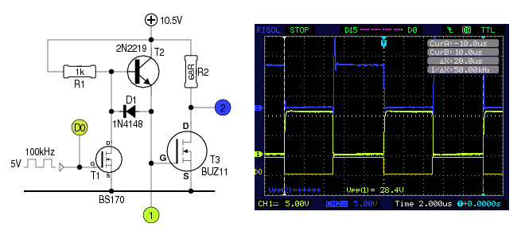 Gelukkig valt daar wat aan te doen met... jawel, een bipolaire transistor1. Het schema rechts toont, hoe we die bij het circuit betrekken.
Zodra T1 geleidt, zal hij de gate (-capaciteit) van T3 ontladen
via D1.
Daarnaast wordt ook de basis van T2 laag gemaakt. De
aanwezigheid van D1 zorgt er voor, dat de spanning op de basis
van T2 0.6V lager is dan de spanning op diens emitter.
T2 kan dus zeker geen stroom leveren aan de gate van T3.
D1 zal ook beletten, dat de gate-spanning van T3 lager wordt dan
0.6V, maar die spanning is laag genoeg om deze FET te laten sperren.
Zodra T1 terug spert, krijgt R1 de kans om T2 van basisstroom
te voorzien. De invloed van D1 valt immers weg. En nu is het
geen weerstandje dat de gate van T3 moet opladen, maar een heuse
schakeltor.
Het resultaat mag gezien worden.
Misschien nog even opmerken, dat alle proefopstellingen op een breadboard uitgevoerd zijn. Dat is verre van ideaal, als je aan 100kHz gaat schakelen, en het verklaart ten dele de uitschieters op de scoopplaatjes.
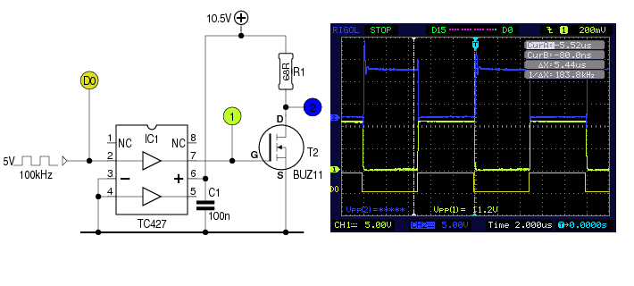
Laten we nu maar eens een echte FET-driver aan het werk zetten.
Een TC427 bijvoorbeeld.
Dat ziet er ook prima uit. Er is nog een minieme
vertraging te merken, maar de flanken zijn behoorlijk steil,
zowel op de gate van T2 als op diens drain.
Merk op, dat er in de praktijk nog een condensator van 1μF naast C1 moet geplaatst worden. Géén elco! IC-voetjes zijn af te raden. En wie slim is, neemt voor C1 een SMD-exemplaar dat aan de soldeerzijde tussen de voedingspinnen van de FET-driver geplaatst wordt. De prestaties van de driver kunnen er enkel wel bij varen.
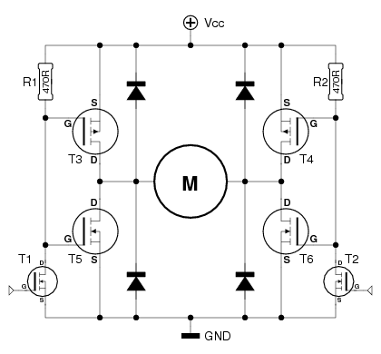
Er zwerven nogal wat schema's van H-bruggen op het internet
rond, de ene al wat beter dan de andere. Hiernaast is een
voorbeeld afgebeeld.
De werking is eenvoudig: maakt men de gate van T1 hoog en die
van T2 laag, dan wordt de motor gestuurd met Vcc aan zijn
linkerzijde en met GND aan zijn rechterzijde. Maakt men de
gate van T1 laag en die van T2 hoog, dan zal de motor andersom
draaien. Maakt men beide gate's hoog (of laag), dan is de
spanning aan beide zijden van de motor gelijk, en zal hij niet
draaien.
Wil men echter de motor niet enkel links of rechts laten
draaien, maar bovendien zijn vermogen regelen door een
PWM-signaal op T1 (of T2) te plaatsen, dan is deze
schakeling een slechte keuze.
Immers, als T1 in geleiding gestuurd wordt, zal deze de gates
van T3 en T5 vrij snel laag maken. Maar zodra T1 terug spert
zullen die gates er de tijd voor nemen om van laag naar hoog te
gaan. Het gevolg daarvan is, dat zowel T3 als T5 gedurende een
korte periode beiden in geleiding zijn. Als dat 1000 maal per
seconde gebeurt, kan het een vroegtijdig einde van de FET's
betekenen.
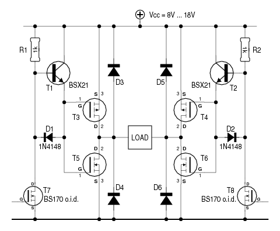
De truuk met de bipolaire transistor kan ook hier soelaas
bieden, zolang de schakelfrequentie maar niet te hoog is.
Ook nu zullen T3 en T5 tijdens elke schakel-flank even samen
geleiden, maar die tijd is veel korter dan bij het vorige
schema.
Teneinde de theorie aan de praktijk te toetsen, werd de
linker-helft van de H-brug opgebouwd, gevoed met 18V, en
aangestuurd met een 50/50% PWM-signaal.
Het stroomverbruik - zonder belasting, voor alle duidelijkheid:
100Hz 10mA
1kHz 12mA
10kHz 29mA
20kHz 50mA
50kHz 111mA
100kHz 210mA
Van deze stromen moet telkens 9mA afgetrokken worden - dat is
hetgeen R1 voor zijn rekening neemt.Ik zou durven stellen dat de schakeling het uitstekend doet tot
1kHz. Iets meer mag ook, maar dan wordt het schakelgedrag minder
gunstig.
Voor 50kHz en meer is de schakeling volkomen
ongeschikt.
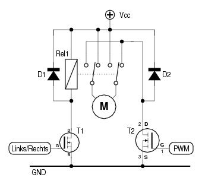
“Met een relais?!” hoor ik u al roepen. Jazeker, een relais is
geen aftands product uit de 20e eeuw. Nou goed, het maakt wat
geluid bij het schakelen, maar de overgangsweerstand van de
contacten is stukken beter dan de RDS(on) van menig FET.
En het is voor deze taak ―ompolen en vermogen regelen― een
prima bouwsteen.
De spanning op de gate van T1 bepaalt in welke richting de motor
zal draaien. Een PWM-signaal op de gate van T2 regelt het
vermogen. Zowel T1 als T2 zijn in dit geval logic-level FET's,
die rechtstreeks met 5V kunnen aangestuurd worden.
Bij zware motoren kan het gebeuren dat een geschikte logic-level
FET niet voorhanden is. In dat geval zal er een
FET-driver aan te pas moeten komen.
Wie verstandig is, schakelt eerst T2 uit, en laat de motor tot stilstand komen alvorens hem om te polen. Op die manier hoeft het relais geen belasting te schakelen, hetgeen zijn levensduur ten goede komt.
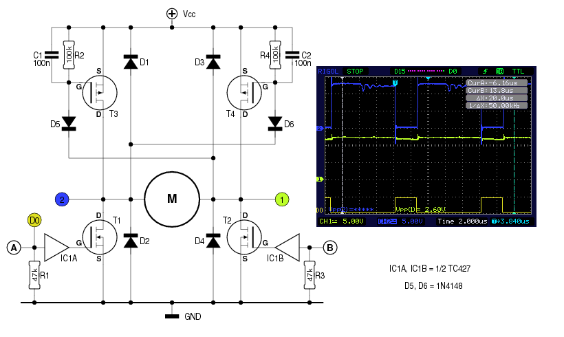
Als we de eerste FET-versie van FET-drivers
voorzien, kunnen we daarmee de FET's op een goede manier
aansturen teneinde het vermogen te regelen. Maar het
kan beter.
Als we er voor zorgen dat de bovenste FET ingeschakeld blijft,
hoeven we enkel de onderste FET van een PWM-signaal te voorzien.
Het schema hiernaast toont wat ik bedoel.
Stel dat men ingang B laag maakt, en op A een
PWM-signaal zet. Zodra de drain van T1 laag wordt, zal deze via
D6 ook T4 open sturen. C2 zorgt er voor dat T4 blijft geleiden
tijdens de korte ogenblikken dat T1 terug spert.
T1 is dus de enige component die actief schakelt, en voor
schakelverliezen kan zorgen. Bij gebruik van FET-drivers
volstaat het dan ook, die enkel in te zetten voor T1 en T2.
Deze H-brug heeft wel een nadeel dat de eerste niet heeft: men mag nooit T1 en T2 gelijktijdig aansturen. Als dat wel gebeurt, is een kortsluiting het gevolg!
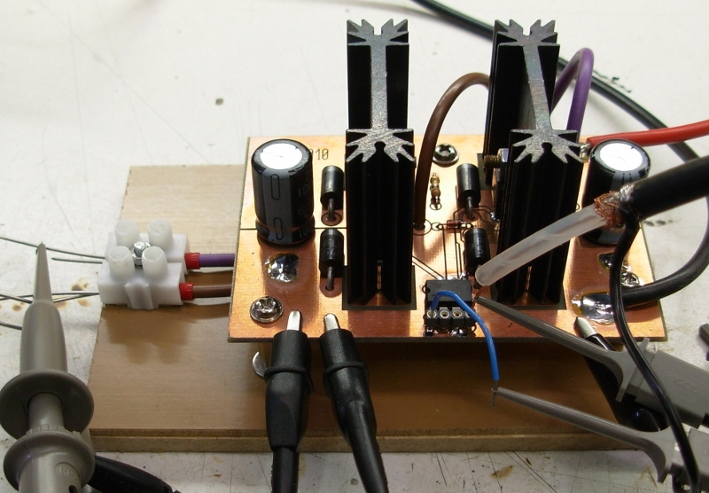
In tegenstelling tot de voorgaande proefopstellingen, is deze
H-brug definitief opgebouwd, zoals de foto toont.
Het scoop-plaatje laat het schakelgedrag zien bij een
voedingsspanning van 12V, een ohmse belasting2 van 3Ω,
een schakelfrequentie van 100kHz en een puls/pause-verhouding
van 25/75.
De aanwezige koelplaten zijn sterk overdreven - ze worden niet voelbaar warm. Maar omdat deze schakeling gebouwd is voor experimenteerdoeleinden, kunnen ze vroeg of laat hun dienst bewijzen.
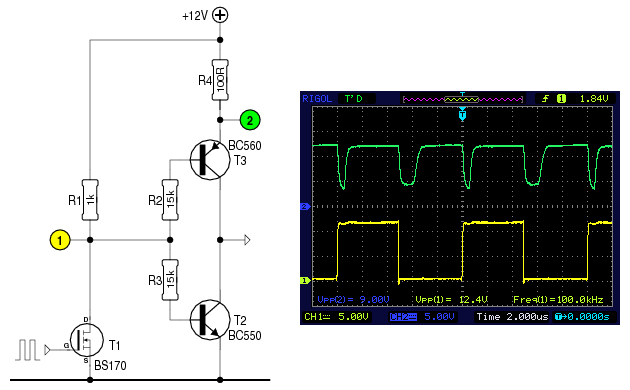 Met bipolaire torren kan je uiteraard ook een H-brug samenstellen. Wie zich daaraan waagt, komt voor andere problemen te staan.
Kijk even naar het plaatje hiernaast. Het is maar een halve
H-brug, en bovendien opgebouwd met signaal-transistors die amper
vermogen kunnen leveren. Maar dat volstaat om e.e.a. te
verduidelijken.
Als T1 in geleiding wordt gestuurd, krijgt T3 basisstroom.
Die gaat daardoor eveneens geleiden.
Spert T1, dan is het T2 die basisstroom krijgt.
Wie het begin van dit artikel heeft gelezen, ziet al meteen dat
zoiets fout gaat. De ingeschakelde tor wordt immers in
verzadiging gestuurd, en zal nog even blijven geleiden als de
basisstroom wegvalt en de andere tor basisstroom krijgt.
Dat is duidelijk te zien op het bijgaande scoop-plaatje.
Hoewel er helemaal geen belasting aanwezig is, komt er bij het
schakelen een flinke spanningsval over R4 te staan, hetgeen
bewijst dat de schakeling gedurende 1μS bijna 100mA slikt.
Het feit dat de piek bij een opgaande flank aanmerkelijk korter
is, valt te wijten aan R4, die belet dat T3 helemaal in
verzadiging gaat.
Dat probleem kan opgelost worden, door er voor te zorgen dat
T2/T3 niet in verzadiging gestuurd worden. Maar daardoor gaan ze
meer vermogen (warmte) dissiperen omdat de
collector/emitter-spanning hoger blijft.
Je kan ze ook als emittervolger schakelen. Dan schakelen ze ook
snel, maar gaan ze nog meer vermogen dissiperen.
Heel vervelend, allemaal. Maar we kunnen die nare eigenschappen van een bipolaire transistor ook benutten...
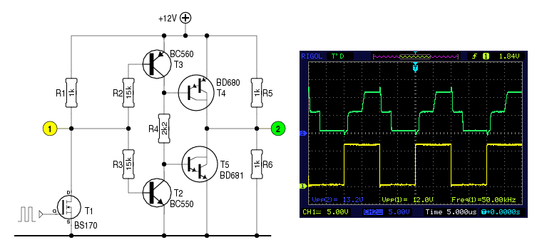
Om te beginnen plaatsen we tussen T2 en T3 een weerstand, zodat
ze geen kortsluiting kunnen veroorzaken.
Vervolgens gaan we die weerstand gebruiken om een stel zwaardere
(darlington-) transistors van basisstroom te voorzien.
De werking laat zich het best verklaren door T2 en T3 niet als
“stroomleveranciers” te beschouwen, maar eerder als
“stroomafknijpers”.
T3 zal ―als hij in geleiding is― T4 van basisstroom
onthouden. T2 doet hetzelfde met T5. En we weten dat T2 en T3
tijdens het omschakelen gedurende een korte periode allebei in
geleiding zijn. Daaruit volgt, dat T4 en T5 gedurende die korte
periode gespert blijven. Het bijgaande scoop-plaatje laat zien
dat na elke flank de spanning op meetpunt 2 gedurende 3
à 4 μS 6V bedraagt, een spanning die afkomstig is van
spanningsdeler R5/R6. Zowel T4 als T5 sperren op dat ogenblik.
T2 en T3 fungeren hier als dead-time generator.
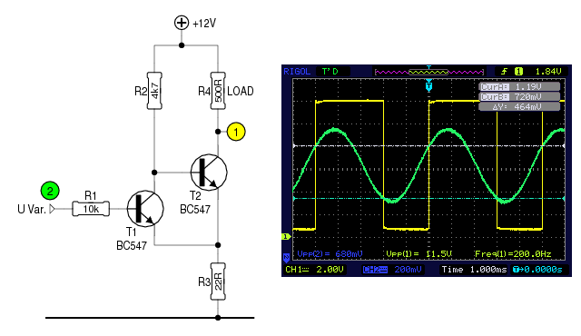
In de bovenstaande situaties gingen we steeds uit van een
stuursignaal dat maar twee toestanden kan aannemen: ofwel laag,
ofwel hoog.
In de praktijk is dat niet altijd het geval. Er kan ruis op het
signaal zitten, of het signaal kan zondermeer analoog zijn.
Als we in zo'n geval een duidelijk schakelpunt willen, zullen we
hysteresis moeten inbouwen. Traditionele middelen hiervoor
zijn buffers met een Schmitt-trigger ingang of een
comparator met meekoppeling van uit- naar ingang.
Dat het vaak op te lossen valt met een extra-transistor en wat
weerstanden, toont het schema rechts.
De werking valt eenvoudig te verklaren, als we starten met een
ingangsspanning van 0V. T1 spert dan, en R2 voorziet T2 van
basisstroom. Die laatste zal geleiden, en zijn emitterstroom zal
een kleine spanningsval over R3 veroorzaken.
Laten we nu de ingangsspanning langzaam stijgen, dan gebeurt er
niets tot die groter is dan de basis/emitter-overgang van
T1 plus de spanningsval over R3. Op dat ogenblijk gaat T1
een beetje geleiden. Dat betekent, dat hij een beetje
basisstroom wegsnoept van T2. Die gaat hierdoor wat minder
geleiden, waardoor de spanningsval over R3 lager wordt.
Op dat ogenblik treedt een lawineeffect op: het
spanningsverschil tussen de ingang en de emitter van T1 wordt
groter, waardoor die beter gaat geleiden en nog meer basisstroom
aan T2 onttrekt, zodat die laatste nóg minder stroom doorlaat,
de spanning over R3 nóg verder daalt, enz...
Laten we de ingangsspanning terug zakken, dan zal zich op zeker
ogenblik het tegenovergestelde effect voordoen. Dat gebeurt pas
bij een spanning die aanmerkelijk lager is. Op het scoop-plaatje
zien we, dat er een verschil is van bijna 500mV.
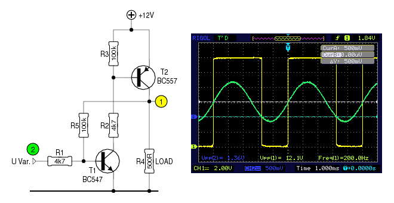 De aanwezigheid van R3 zorgt er wel voor, dat R4, de belasting, niet de volle voedingsspanning krijgt. Een deel blijft immers over R3 staan. Niet geschikt om zware belastingen te schakelen, dus. En bovendien inverteert de schakeling - de ingang moet immers laag zijn om de belasting van stroom te voorzien.
Tijd voor een andere aanpak.
Deze is samengesteld uit een NPN/PNP-koppel. Dat heeft alvast
tot gevolg dat de schakeling niet meer inverteert. We moeten dus
de ingang hoog maken, om de belasting van stroom te voorzien.
Hier is het R5 die voor meekoppeling zorgt. Als de ingang laag
is, is R5 a.h.w. met GND verbonden (via de belasting). Stijgt de
ingansspanning, dan zal een deel van de stroom door R1 via R5
naar GND vloeien.
Zodra T1 enigzins gaat geleiden, krijgt T2 basisstroom. T2
begint dus ook te geleiden, en de spanning aan zijn collector
stijgt. R5 gaat nu geen stroom meer naar GND afleiden, maar
juist het tegenovergestelde doen: hij gaat stroom leveren
aan T1. Die gaat daardoor meer geleiden, T2 krijgt meer
basisstroom, en het lawine-effect is een feit.
Ook hier wordt T2 pas uitgeschakeld op een ingangsniveau dat
duidelijk lager is dan bij het inschakelen - het scoop-plaatje
toont dat dit 500mV bedraagt.
Willen we meer hysteresis, dan zouden we R5 een maatje kleiner
kunnen nemen. Dat levert echter een probleem op: de
ingangsspanning moet dan negatief worden om T2 uit te
schakelen. Daar valt echter een mouw aan te passen door tussen
de emitter van T1 en GND één of meerdere dioden te plaatsen.
Met elke diode veschuiven de omslagpunten 0.6V naar boven.
Bij deze schakeling kan T2 vervangen worden door een P-FET. PWM-bedrijf valt sterk af te raden. Daarvoor is de schakeling te traag.
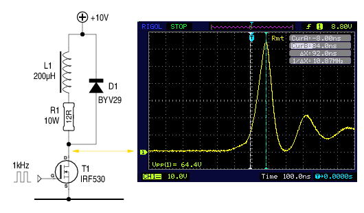 Als we een inductieve belasting uitschakelen, veroorzaakt de stroom door de zelfinductie een flinke spanningspiek. Die piek vangen we op met behulp van een vrijloopdiode, zoals D1 in het schema hiernaast, en dat was het dan...
Of toch niet? Als we even naar het scoop-beeld kijken, merken we
dat de piek ―ondanks D1― nog steeds een veelvoud is van de
voedingsspanning3.
Zolang de FET geschikt is voor die spanning, zoals de
IRF530 hiernaast, is er geen probleem - die is immers goed
voor 100V.
En er zijn FET's verkrijgbaar die 500V en meer aankunnen. Maar als er flinke stromen moeten geschakeld worden, willen we een FET met een lage RDS(ON). Bij de IRF530 is dat 0.160Ω, waardoor de FET bij een stroom van 20A al snel 64W in warmte moet omzetten - als je er in slaagt zijn temperatuur op 25°C te houden! Want bij hogere temperaturen mag je ook een hogere RDS(ON) verwachten, waardoor de FET nog meer vermogen te verwerken krijgt, enz...
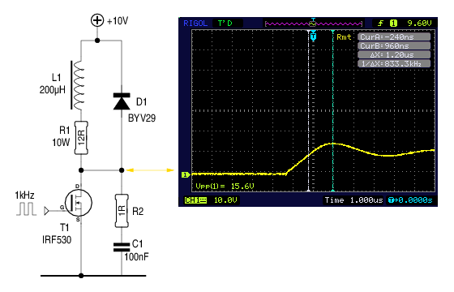
Nu, dan nemen we een FET met een lage RDS(ON). Een
IRFP064N, bijvoorbeeld. De fabrikant geeft 0.008Ω op,
hetgeen heel wat gunstiger is: bij 20A verstookt de FET nog maar
3W. En er bestaan FET's die nóg beter presteren.
Als we even verder in de datasheet van de IRFP064N kijken,
merken we echter dat hij slechts geschikt is voor spanningen tot
55V. Dat zou betekenen, dat hij onbruikbaar is voor deze
testopstelling - de piek bij het uitschakelen loopt immers op
tot bijna 65V! En de IRFP064N is hierop geen uitzondering -
FET's met een erg lage RDS(ON) zijn doorgaans niet
geschikt voor hogere spanningen.
Wat nu?
Misschien een R/C-netwerkje zoals R2/C1 op het schema aan de
linkerzijde? Dat beperkt de piek alvast tot minder dan 16V - een
hele verbetering.
Nu is deze R/C-combinatie maar lukraak gekozen.